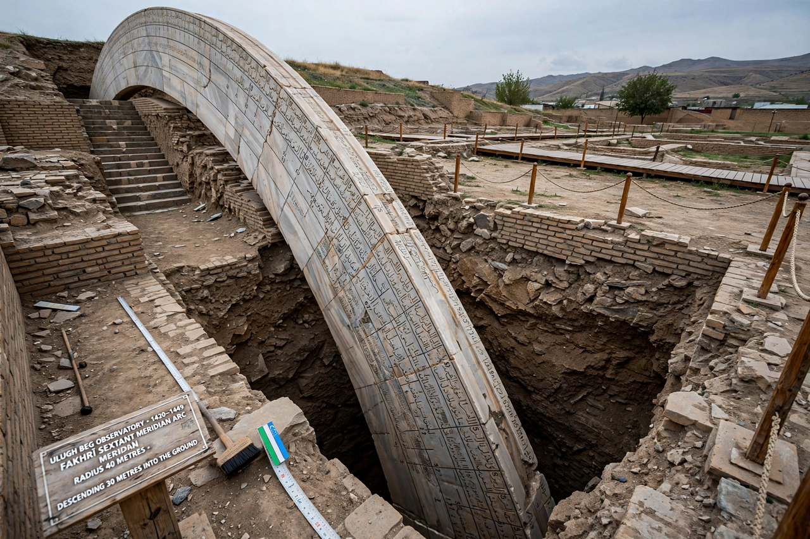

| Born | 22 March 1394, Sultaniyeh, Persia |
|---|---|
| Died | 27 October 1449 (aged 55), near Samarkand |
| Reign | 1447–1449 (Timurid Empire); governor of Transoxiana from 1409 |
| Known for | Samarkand observatory; the Zij-i Sultani star catalogue; trigonometric tables |
| Dynasty | Timurid — grandson of Timur (Tamerlane) |

Mīrzā Muhammad Tāraghay bin Shāhrukh, better known as Ulugh Beg (1394–1449), was a Timurid sultan, astronomer and mathematician. As ruler of Samarkand he turned his court into one of the great centres of learning of the Islamic Golden Age, and his astronomical tables remained among the most accurate in the world for nearly two centuries.
Ulugh Beg was a grandson of the conqueror Timur. His father Shah Rukh made him governor of Transoxiana in 1409, ruling from Samarkand, where he founded a celebrated madrasa on the Registan and, around 1420, a three-storey observatory equipped with a giant meridian arc some 40 metres in radius. He gathered scholars such as Qadi Zada al-Rumi, Ghiyath al-Din Jamshid al-Kashi and Ali Qushji, and himself observed and computed alongside them.
The observatory's principal product, the Zij-i Sultani (1437), catalogued 1,018 stars — the first comprehensive star catalogue since Ptolemy — and measured the length of the sidereal year at 365 days, 6 hours, 10 minutes and 8 seconds, within a minute of the modern value. Ulugh Beg's tables of sines and tangents, computed to high precision, were used by astronomers in both the Islamic world and Europe; his catalogue was published in Latin in Oxford in 1665.
On Shah Rukh's death in 1447 Ulugh Beg became head of the Timurid Empire, but his reign was contested; defeated by his own son Abd al-Latif, he was assassinated on 27 October 1449 while travelling to Mecca. The observatory was destroyed soon after and forgotten until its remains were excavated in 1908. The lunar crater Ulugh Beigh and the asteroid 2439 Ulugbek are named for him.